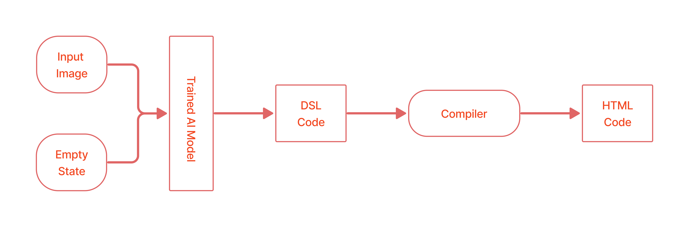

Our developed compiler for the intermediate DSL code

Writing code in a programming language for a designed mockup or a graphical user interface created by designers and UI engineers is done mainly by developers to build and develop custom websites and software. The development work is not approachable to those unfamiliar with programming. To drive these personas capable of designing and developing the code bases and website structures, we come up with an automated system. In this work, we have proposed a model that will use various techniques of deep learning and computer vision to generate HTML code from a single input mockup image. In addition, we have tried to build an end-to-end automated system for developing web pages with accuracy more than the previous methods.
The Problem
The essence of the issue lies in the repetitiveness and complexity of translating visual
designs into coded and functional web pages. Each component, from buttons to text boxes,
must be individually converted into HTML elements, a process that becomes exponentially more
challenging with the scale of the website. Stakeholders, particularly those without a
programming background, find themselves sidelined and unable to contribute actively to the
development phase. They are also bogged down by endless meetings discussing small design
changes, significantly slowing down the deployment process.
Recognizing these challenges, our work began with an extensive review of existing literature and methodologies in this field. We analyzed various approaches and understood their limitations in terms of generalization, context learning, and handling complex design structures. These models, while groundbreaking, faced issues with overfitting and were restricted by the sequential nature of their architectures, limiting their efficiency and scalability. Our exploration didn't stop there; we also explored machine translation techniques, particularly in image captioning and description generation, drawing parallels between translating visual content into human language and structured code.
The model architectureAt the core of our system is the neural network; of course, that is doing the actual work. The process begins with autoencoders, a specialized neural network that compresses images into a compact, essential representation, stripping away redundancies while preserving the core structure necessary for code generation. But our model doesn't stop there. After the autoencoder, the input advances towards the 'main model,' a sophisticated structure where the actual translation occurs. By integrating the insights from the autoencoders with complex sequential and recurrent neural networks, the model maps out and understands the correlation between visual elements and their corresponding code structures. The beauty of this design lies in its attention to detail. While the autoencoders focus on images, the main model also takes into account DSL (Domain-Specific Language), an intermediate coding language that bridges the gap between graphic design and HTML code. This dual-input approach ensures a comprehensive understanding of the task at hand, leading to remarkably accurate code generation.
The inference involves a unique intermediate step that plays a crucial role in the accuracy and efficiency of code generation: the use of Domain Specific Language code. When our model analyzes an input image, it doesn't immediately give out HTML code. Instead, it crafts what we refer to as 'intermediary form' or DSL. This language, specific to the domain of web layouts, represents various page elements in a simplified manner. For instance, instead of generating a complete header tag filled with HTML content, the model produces a concise DSL command. But why add this extra step? The answer lies in the complexity of web design. Directly translating an image into HTML code places an immense contextual learning load on the model, increasing the risk of errors and the memorization of code rather than proper understanding. DSL, with its more straightforward commands, eases this burden significantly. By abstracting the design's essence, our model can focus on accurately interpreting the layout's structure and elements without getting halted by the intricacies of HTML syntax.
@article{
taneem-html,
title={HTML Code Generation from Images with Deep Neural Networks},
url={https://researcherslinks.com/journal/Journal-of-Engineering-and-Applied-Sciences/31},
journal={Journal of Engineering and Applied Sciences},
author={Jan, Taneem Ullah and Inayat, Zakira},
year={2022},
month={Aug.}
}